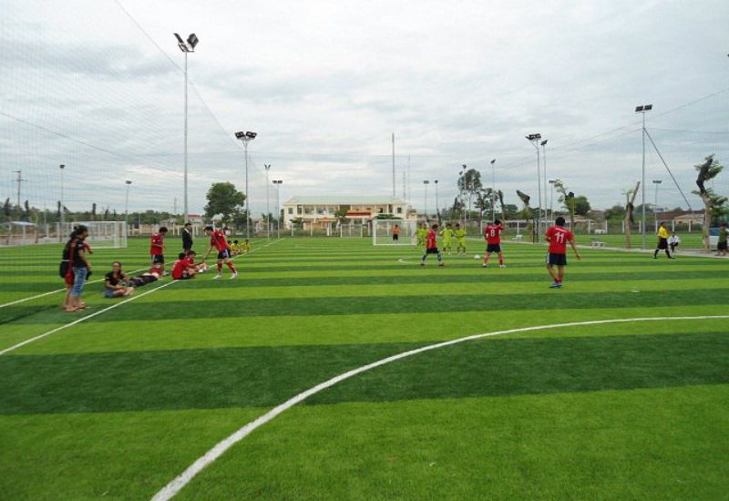

Sân bóng nhân tạo TP.HCM
Giới thiệu chung: Sân bóng Hồ Chí Minh được xây dựng và hoàn thành vào tháng 10/2019, bao gồm 3 sân cỏ nhân tạo.
Địa chỉ: Ngõ 01 - 02, đường Cải Tiến, Kiến Tạo (trong trường đại học Cải Tiến Lớn)
Các dịch vụ:
- Cho thuê sân theo giờ, thuê theo tuần, tháng
- Không cần đặt cọc
- Có nước uống miễn phí
- Có quần áo thi đấu cho các đội (200k/đội)
- Có trọng tải (100k/h)
- Gửi xe máy miễn phí, có chỗ để ô-tô
Giá thuê sân 7 người:
- 06:00 - 16:00: 300k/h
- 16:00 - 17:30: 600k/h
- 17:30 - 20:30: 800k/h
- 20:30 - 22:00: 400k/h